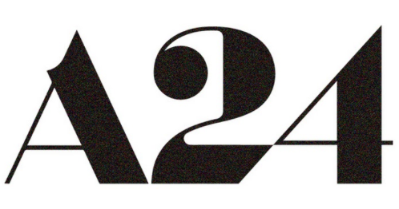

Assisted in directing high-concept commercials for top-tier global brands, working closely with visionary director Chris Cunningham.
Played a key role in conceptualizing and executing experimental visual narratives, combining cutting-edge cinematography with innovative storytelling techniques.

Production Assistant, A24
February –November 2022
Collaborated on the production of award-winning independent films, assisting the production team in ensuring the smooth execution of on-set operations.
Education
BA (HONS) Media Production, Bournemouth University
2023 – now
Year 1 Grade: Upper Second-Class Honours
Member in Film Society
Exchange Program at Breda University of Applied Sciences in Creative Business